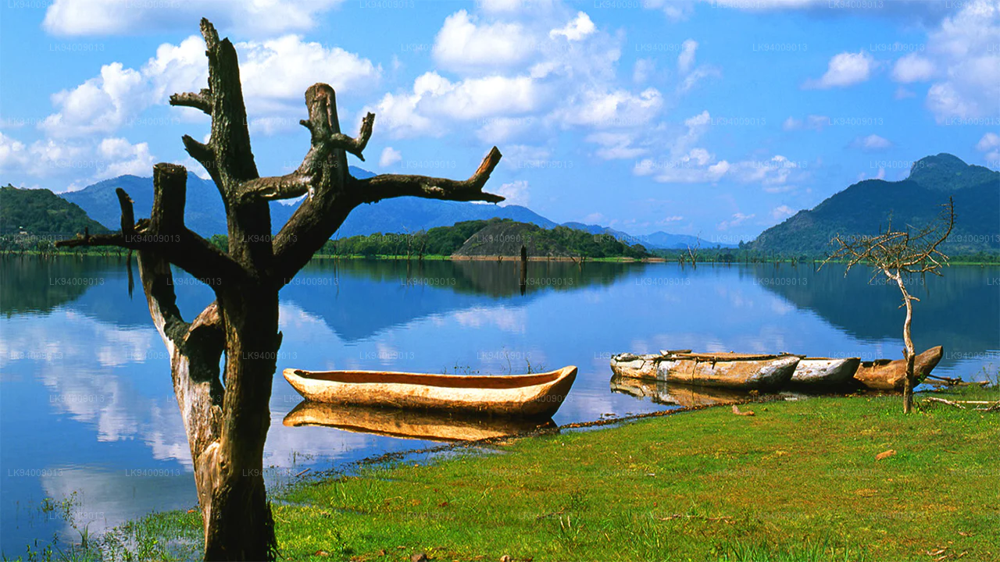

Ayubowan
WELCOME TO SRI LANKA

Sri Lanka's Rich Heritage
Journey through time and immerse yourself in the fascinating cultural treasures that Sri Lanka has to offer.
Experience Living History
Step into a world of ancient temples, royal palaces, and vibrant traditions that have shaped Sri Lanka's captivating heritage
Spectacular Natural Landscapes
Sri Lanka is a tropical paradise blessed with an abundance of natural beauty. From pristine beaches and majestic mountains to lush rainforests and cascading waterfalls, the island offers a diverse range of spectacular natural landscapes. These landscapes are not only breathtaking in their scenic beauty but also host rich ecosystems that are home to a remarkable array of flora and fauna. Exploring Sri Lanka's natural landscapes is a journey of discovery, where you can witness the wonders of nature in all their glory.
.jpg)
.jpg)
Embark on a virtual tour of Sri Lanka's awe-inspiring natural landscapes, each with its unique charm and allure. Here are some of the remarkable landscapes that await you.
Unspoiled Beachesr
.jpg)
Sri Lanka is renowned for its pristine beaches that stretch along the coastline. From the golden shores of Bentota to the untouched beauty of Arugam Bay, these beaches offer tranquility, stunning sunsets, and opportunities for water sports and relaxation.
Majestic Mountains

The central highlands of Sri Lanka are adorned with towering mountains and verdant tea plantations. Explore the misty beauty of Nuwara Eliya, hike through the breathtaking Horton Plains, or conquer the peaks of Adam's Peak for panoramic views that will leave you in awe.
National Parks
.jpg)
Sri Lanka is home to numerous national parks that harbor an incredible diversity of wildlife. Yala National Park, Udawalawe National Park, and Wilpattu National Park offer thrilling safari experiences, where you can spot elephants, leopards, crocodiles, and a myriad of bird species.
Scenic Waterfalls
.jpg)
Discover the cascading waterfalls hidden amidst the lush landscapes of Sri Lanka. From the breathtaking beauty of Dunhinda Falls to the dramatic drop of Bambarakanda Falls, these natural wonders are a sight to behold and provide opportunities for cooling off in their refreshing pools.
Serene Lakes
Sri Lanka's lakes offer serene and picturesque settings. The serene waters of Kandy Lake, located in the heart of Kandy, provide a peaceful retreat amidst the bustling city. The expansive Udawalawe Reservoir, surrounded by wildlife and lush vegetation, is another captivating spot.